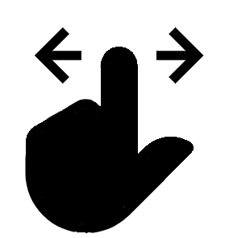

<!--
  Generated template for the AltaMesaPage page.

  See http://ionicframework.com/docs/components/#navigation for more info on
  Ionic pages and navigation.
-->
<ion-header>

  <ion-navbar>
    <ion-title>
      Alta de Mesa
    </ion-title>
  </ion-navbar>

</ion-header>


<ion-content padding>
  
    <div padding [@flyInBottomFast]="cloudState" id="cloud-layer">
        <form [formGroup]="frm">
             <ion-list inset [@bounceInBottom]="formState" >
                <br>
               <ion-item>
                 <ion-label>Número de mesa</ion-label>
                 <ion-input style="text-align: center" type="number" formControlName="numero" readonly required></ion-input>
               </ion-item>
                 <br>
               <ion-item>
                 <ion-label>Cantidad de comensales</ion-label>
                 <ion-input style="text-align: center" type="number" formControlName="comensales" required></ion-input>
               </ion-item>
               <br>
               <ion-item>
                <ion-label>Tipo</ion-label>
                <ion-select style="text-align: center" formControlName="tipoOpc" required auto >
                    <ion-option value="">Seleccione</ion-option>  
                    <ion-option value="Barra">Barra</ion-option>  
                    <ion-option value="Estándar">Estándar</ion-option>  
                    <ion-option value="Para discapacitados">Para discapacitados</ion-option>
                    <ion-option value="Sector fumadores">Sector fumadores</ion-option>
                    <ion-option value="Terraza">Terraza</ion-option>
                    <ion-option value="VIP">VIP</ion-option>
                </ion-select>
               </ion-item>      
               <br>
               <ion-list>
                   <ion-item-sliding #item>
                     <ion-item style="text-align: center">
                       Vincular foto
                       
                     </ion-item>
                     <ion-item-options side="left">
                       <button ion-button color="dark" (click)="Sacar()"> <ion-icon name="camera" style="zoom:2"></ion-icon></button>
                     </ion-item-options>
                 
                     <ion-item-options side="right">
                       <button ion-button color="dark" (click)="Elegir()"><ion-icon name="photos" style="zoom:2"></ion-icon></button>
                     </ion-item-options>
                   </ion-item-sliding>
                 </ion-list>
           </ion-list>
       <ion-row>
        <ion-row>
          <ion-col style="vertical-align: middle;"> 
            <br>
             
          </ion-col>
          <ion-col >
            <p *ngIf="createdCode">
                <ngx-qrcode [qrc-value]="createdCode" style="width:40vw"></ngx-qrcode>
            </p>
          </ion-col>
        </ion-row>
         <ion-col>
             <button ion-button  color="dark" block type="button" (click)='newUpdateMesa()' class="login-button" [@fadeIn]="loginState" [disabled]="!frm.valid">Confirmar</button>
         </ion-col>
       </ion-row>
       </form>
     </div>
</ion-content>

